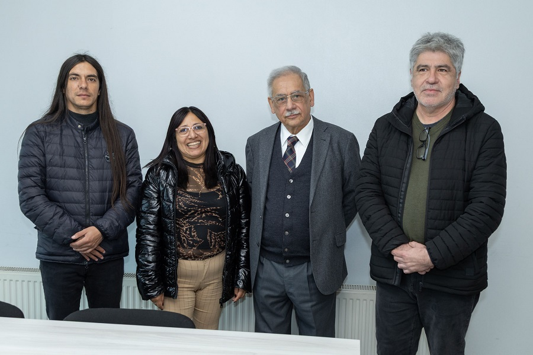

PIRI UFRO fortalece lazos internacionales con universidad colombiana
Entre el 8 y el 12 de septiembre se realizó la visita de académicos de la Universidad de Nariño, Colombia, a la UFRO, para reactivar el convenio vigente entre ambas casas de estudios.
Ver noticia completa
Los académicos Gerardo Bravo y Miriam Quitiaquez realizaron una fructífera visita a la U. de La Frontera con el objetivo de retomar el trabajo que se había desplegado hace más de diez años con el PIRI. En el marco de su apretada agenda sostuvieron una reunión protocolar con el decano de la Facultad de Medicina, Dr. Wilfried Diener, y se interiorizaron del trabajo de nuestra universidad.
La Universidad de Nariño mantiene vigente un convenio de cooperación internacional con la UFRO y que es el marco para el trabajo específico que se dará nuevamente con el PIRI, cuyo coordinador y académico del departamento de Salud Pública, Marcelo Carrasco, explicó: "El PIRI es la presencia permanente en el territorio, pero siendo parte de éste y eso es lo que los académicos de Nariño conocieron, con la idea de que en el 2026 puedan volver a implementarlo en Colombia y haya movilidad con reciprocidad entre nuestras universidades".
Esta movilidad permitirá recibir estudiantes de Colombia en el PIRI que contarán con el apoyo de la UFRO y que estudiantes chilenos puedan ir a la sede de Ipiales de la U. de Nariño, casa de estudios que en la actualidad tiene 18 mil estudiantes y su sede principal está en la ciudad de Pasto.
Esperamos retomar el proceso con el convenio marco entre ambas universidades y un convenio específico para la sede Ipiales. Ha sido una experiencia reconfortante ya que es muy interesante vernos como pares y hacer un intercambio. Estamos preparados para la reciprocidad en el proceso PIRI y en otras facultades.
— Miriam Quitiaquez, docente del departamento de Comercio Internacional y MercadeoSuscribimos un convenio marco entre las dos universidades que nos permite darle continuidad al proceso anterior. El PIRI se ha convertido en un embajador de la UFRO y es un ejercicio que pretendemos replicar ya que compartimos características entre las universidades, pero también problemáticas latinoamericanas que como universidades podríamos resolver o plantear alternativas.
— Gerardo Bravo, coordinador de la sede IpialesPara los académicos de Colombia y de la UFRO, en los 34 años del PIRI, esta alianza significa un nuevo paso en su consolidación como embajador internacional, modelo de trabajo para el país y el extranjero, paradigma de universidad que prioriza la formación en términos de formación y valores, y un actor universitario de presencia real en diversos territorios.
"Esperamos volver a implementar el PIRI en nuestra universidad desde el 2026, nuestra sede se ha preparado para retomar el trabajo y comenzar con la movilidad estudiantil", cerraron los académicos colombianos.